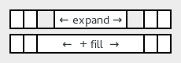

When adding a child to a GtkBox, there are two hard-to-remember parameters (child properties, more exactly) named expand and fill that determine how the child size behaves in the main direction of the box. If expand is set, the box allows the position occupied by the child to grow when extra space is available. If fill is also set, the extra space is allocated to the child widget itself. Otherwise it is left 'free'. There is no control about the 'minor' direction; children are always given the full size in the minor direction.
GtkGrid does not have any custom child properties for controlling size allocation to children. Instead, it fully supports the newly introduced “hexpand”, “vexpand”, “halign” and “valign” properties.
The “hexpand” and “vexpand” properties operate in a similar way to the expand child properties of GtkBox. As soon as a column contains a hexpanding child, GtkGrid allows the column to grow when extra space is available (similar for rows and vexpand). In contrast to GtkBox, all the extra space is always allocated to the child widget, there are no 'free' areas.
To replace the functionality of the fill child properties, you can
set the “halign” and “valign” properties. An
align value of GTK_ALIGN_FILL has the same effect as setting fill
to TRUE, a value of GTK_ALIGN_CENTER has the same effect as setting
fill to FALSE. The image below shows the effect of various combinations
of halign and valign.
Example 22. Expansion and alignment
box = gtk_box_new (GTK_ORIENTATION_HORIZONTAL, 0);
gtk_box_pack_start (GTK_BOX (box), gtk_label_new ("One"), TRUE, FALSE, 0);
gtk_box_pack_start (GTK_BOX (box), gtk_label_new ("Two"), TRUE, TRUE, 0);
This can be done with GtkGrid as follows:
grid = gtk_grid_new ();
child1 = gtk_label_new ("One");
gtk_widget_set_hexpand (child1, TRUE);
gtk_widget_set_halign (child1, GTK_ALIGN_CENTER);
gtk_grid_attach (GTK_GRID (grid), child1, 0, 0, 1, 1);
child2 = gtk_label_new ("Two");
gtk_widget_set_hexpand (child2, TRUE);
gtk_widget_set_halign (child1, GTK_ALIGN_FILL);
gtk_grid_attach_next_to (GTK_GRID (grid), child2, child1, GTK_POS_RIGHT, 1, 1);
One difference between the new GtkWidget expand properties and the GtkBox child property of the same name is that widget expandability is 'inherited' from children. What this means is that a container will become itself expanding as soon as it has an expanding child. This is typically what you want, it lets you e.g. mark the content pane of your application window as expanding, and all the intermediate containers between the content pane and the toplevel window will automatically do the right thing. This automatism can be overridden at any point by setting the expand flags on a container explicitly.
Another difference between GtkBox and GtkGrid with respect to expandability is when there are no expanding children at all. In this case, GtkBox will forcibly expand all children whereas GtkGrid will not. In practice, the effect of this is typically that a grid will 'stick to the corner' when the toplevel containing it is grown, instead of spreading out its children over the entire area. The problem can be fixed by setting some or all of the children to expand.
When you set the “homogeneous” property on a GtkBox, it reserves the same space for all its children. GtkGrid does this in a very similar way, with “row-homogeneous” and “column-homogeneous” properties which control whether all rows have the same height and whether all columns have the same width.